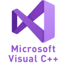
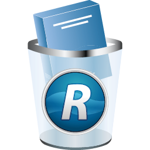

CCleaner

CCleaner, developed by Piriform, is a utility used to clean potentially unwanted files and invalid Windows Registry entries from a computer. It is one of the longest-established system cleaners, first launched in 2004.
Read More..Microsoft Visual C++
Microsoft Visual C++ is a compiler for the C, C++ and C++/CX programming languages by Microsoft. MSVC is proprietary software; it was originally a standalone product but later became a part of Visual Studio and made available in both trialware and freeware forms.
Read More..Revo Uninstaller
Revo Uninstaller is an uninstaller for Microsoft Windows. It uninstalls programs and additionally removes any files and Windows registry entries left behind by the program's uninstaller or by the Windows uninstall function.
Read More..Internet Download Manager

Internet Download Manager is a shareware download manager owned by American company Tonec, Inc. which is based in New York City. It is only available for the Microsoft Windows operating system. Internet Download Manager is a tool that manages and schedule downloads. It can use full bandwidth.
Read More..